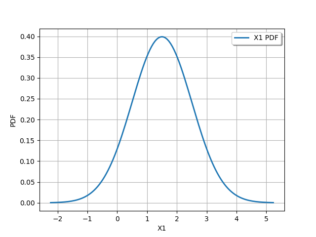
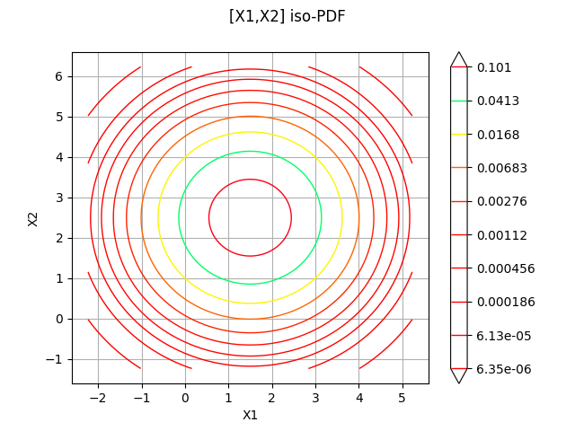
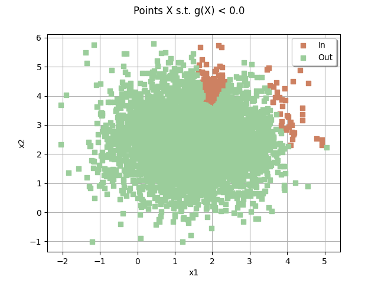
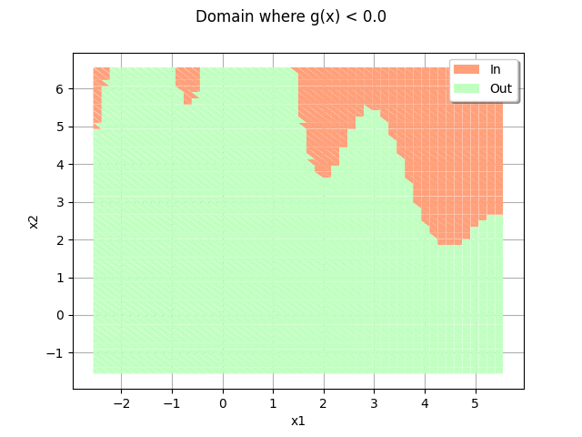
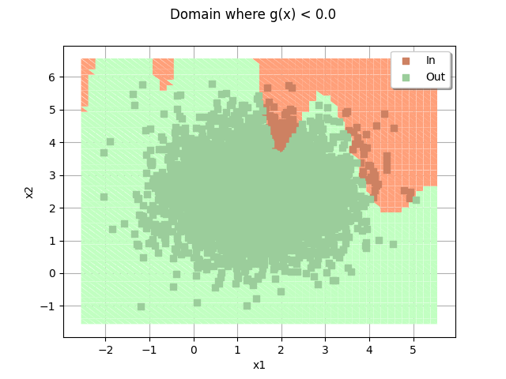

Note
Go to the end to download the full example code.
RP53 analysis and 2D graphics¶
The objective of this example is to present problem 53 of the BBRC. We also present graphic elements for the visualization of the limit state surface in 2 dimensions.
import openturns as ot
import openturns.viewer as otv
import otbenchmark as otb
problem = otb.ReliabilityProblem53()
event = problem.getEvent()
g = event.getFunction()
problem.getProbability()
0.0313
Create the Monte-Carlo algorithm
algoProb = ot.ProbabilitySimulationAlgorithm(event)
algoProb.setMaximumOuterSampling(1000)
algoProb.setMaximumCoefficientOfVariation(0.01)
algoProb.run()
Get the results
resultAlgo = algoProb.getResult()
neval = g.getEvaluationCallsNumber()
print("Number of function calls = %d" % (neval))
pf = resultAlgo.getProbabilityEstimate()
print("Failure Probability = %.4f" % (pf))
level = 0.95
c95 = resultAlgo.getConfidenceLength(level)
pmin = pf - 0.5 * c95
pmax = pf + 0.5 * c95
print("%.1f %% confidence interval :[%.4f,%.4f] " % (level * 100, pmin, pmax))
Number of function calls = 1000
Failure Probability = 0.0260
95.0 % confidence interval :[0.0161,0.0359]
inputVector = event.getAntecedent()
distribution = inputVector.getDistribution()
X1 = distribution.getMarginal(0)
X2 = distribution.getMarginal(0)
alpha = 1 - 1.0e-4
bounds, marginalProb = distribution.computeMinimumVolumeIntervalWithMarginalProbability(
alpha
)
_ = otv.View(X1.drawPDF())

Print the iso-values of the distribution¶
_ = otv.View(distribution.drawPDF())

sampleSize = 5000
drawEvent = otb.DrawEvent(event)
cloud = drawEvent.drawSampleCrossCut(sampleSize)
_ = otv.View(cloud)

Draw the limit state surface¶
graph = drawEvent.drawLimitStateCrossCut(bounds)
graph.add(cloud)
graph
class=Graph name=Limit state surface implementation=class=GraphImplementation name=Limit state surface title=Limit state surface xTitle=x1 yTitle=x2 axes=ON grid=ON legendposition= legendFontSize=1 drawables=[class=Drawable name=Unnamed implementation=class=Contour name=Unnamed x=class=Sample name=Unnamed implementation=class=SampleImplementation name=Unnamed size=52 dimension=1 description=[t] data=[[-2.55562],[-2.39658],[-2.23753],[-2.07849],[-1.91945],[-1.7604],[-1.60136],[-1.44231],[-1.28327],[-1.12423],[-0.965181],[-0.806138],[-0.647094],[-0.48805],[-0.329006],[-0.169962],[-0.0109177],[0.148126],[0.30717],[0.466214],[0.625258],[0.784302],[0.943346],[1.10239],[1.26143],[1.42048],[1.57952],[1.73857],[1.89761],[2.05665],[2.2157],[2.37474],[2.53379],[2.69283],[2.85187],[3.01092],[3.16996],[3.32901],[3.48805],[3.64709],[3.80614],[3.96518],[4.12423],[4.28327],[4.44231],[4.60136],[4.7604],[4.91945],[5.07849],[5.23753],[5.39658],[5.55562]] y=class=Sample name=Unnamed implementation=class=SampleImplementation name=Unnamed size=52 dimension=1 description=[t] data=[[-1.55562],[-1.39658],[-1.23753],[-1.07849],[-0.919445],[-0.760401],[-0.601357],[-0.442313],[-0.283269],[-0.124225],[0.0348185],[0.193862],[0.352906],[0.51195],[0.670994],[0.830038],[0.989082],[1.14813],[1.30717],[1.46621],[1.62526],[1.7843],[1.94335],[2.10239],[2.26143],[2.42048],[2.57952],[2.73857],[2.89761],[3.05665],[3.2157],[3.37474],[3.53379],[3.69283],[3.85187],[4.01092],[4.16996],[4.32901],[4.48805],[4.64709],[4.80614],[4.96518],[5.12423],[5.28327],[5.44231],[5.60136],[5.7604],[5.91945],[6.07849],[6.23753],[6.39658],[6.55562]] levels=class=Point name=Unnamed dimension=1 values=[0] labels=[0.0] show labels=true isFilled=false colorBarPosition=right isVminUsed=false vmin=0 isVmaxUsed=false vmax=0 colorMap=hsv alpha=1 norm=linear extend=both hatches=[] derived from class=DrawableImplementation name=Unnamed legend= data=class=Sample name=Unnamed implementation=class=SampleImplementation name=Unnamed size=2704 dimension=1 description=[y0] data=[[3.24002],[3.53267],[3.7869],...,[-6.2278],[-6.40229],[-6.71544]] color=#1f77b4 isColorExplicitlySet=true fillStyle=solid lineStyle=solid pointStyle=plus lineWidth=1,class=Drawable name=In implementation=class=Cloud name=In derived from class=DrawableImplementation name=In legend=In data=class=Sample name=Unnamed implementation=class=SampleImplementation name=Unnamed size=165 dimension=2 data=[[1.65114,5.06422],[1.76157,4.78625],[4.18955,2.73489],[3.93389,4.2498],[1.87361,4.48099],[2.01063,4.29061],[2.23998,5.6746],[3.53744,4.3651],[2.18033,4.13728],[1.82994,4.7871],[1.86752,4.10889],[1.81716,4.40928],[2.16779,5.73297],[2.12095,4.34192],[3.45396,4.90716],[3.61632,3.78784],[2.04558,3.81026],[2.03272,4.17893],[1.83841,3.95112],[4.02162,3.27881],[1.95925,3.93013],[2.12144,3.82455],[1.90186,4.34799],[2.10244,4.22989],[1.73782,4.1947],[1.99741,3.80387],[1.87058,3.90691],[2.04714,4.48123],[4.40425,3.36754],[2.09837,3.97156],[1.80835,4.76113],[1.95139,4.07353],[4.16757,2.68028],[2.06569,3.72974],[2.10843,4.92171],[3.83905,2.97868],[2.25938,4.98084],[1.82093,3.95329],[2.34962,4.38664],[2.16857,4.44357],[2.13399,3.92915],[2.00911,3.73881],[1.99231,4.12138],[2.01492,3.8151],[2.16131,3.84652],[4.11997,2.76475],[1.85384,4.59369],[1.81185,3.9594],[2.34043,4.4926],[1.83296,4.76362],[1.90667,3.70452],[2.20944,4.56231],[4.09764,3.10114],[2.02339,4.60092],[1.96669,3.79063],[2.08605,4.41344],[1.86158,3.93791],[4.91961,2.30101],[2.17169,3.86562],[2.11806,4.41168],[1.94841,4.46807],[4.03897,2.94693],[4.15829,4.50436],[4.39876,3.16981],[4.93183,2.48464],[1.91469,3.91988],[2.07106,4.8515],[2.14719,4.35846],[4.78698,2.52527],[3.98993,3.31459],[1.71837,4.46736],[2.27706,4.14953],[1.76881,4.56887],[2.26167,4.71843],[1.79727,3.87138],[2.04802,4.08796],[3.63315,4.3175],[3.80667,3.37774],[2.05863,4.54731],[4.34674,4.87216],[1.77743,3.9793],[4.12061,3.0015],[1.84015,4.28211],[1.95545,3.60099],[1.6821,5.67059],[3.87788,3.65185],[3.94355,3.84633],[2.12482,4.04],[1.81118,4.06554],[2.13937,4.40327],[3.84999,3.8666],[2.2768,4.30209],[1.7043,4.21386],[2.2041,5.01414],[2.23181,4.34661],[1.93937,4.12722],[2.29813,4.48268],[2.16226,4.03153],[4.5637,4.42893],[1.63138,4.84995],[1.85847,3.77553],[1.81151,3.88675],[2.16376,4.33237],[2.06452,4.14573],[1.76052,4.06327],[1.78247,4.58034],[3.72753,4.14299],[3.61684,3.79703],[2.19725,4.34345],[2.11912,3.85046],[1.87824,3.93454],[1.78143,4.30098],[1.89195,4.55079],[2.12034,4.51723],[3.91408,2.87681],[2.00472,3.77924],[2.05173,4.20127],[1.93952,3.85903],[2.10562,3.7654],[1.64783,4.80233],[2.08542,3.7495],[2.01705,3.84677],[4.40174,3.58475],[1.80848,3.83734],[1.95784,3.82288],[1.93617,3.75101],[2.01873,3.73646],[1.79802,4.55835],[2.22534,4.3517],[1.975,4.46042],[2.14015,4.25778],[1.99756,3.88902],[3.7882,3.94707],[2.06967,3.7046],[4.13199,2.52252],[2.10029,4.16105],[2.01309,4.4765],[3.96227,2.84626],[3.5017,4.95818],[2.3059,4.24086],[1.88058,4.18464],[2.17493,4.71684],[1.71927,5.24432],[3.67742,3.96015],[1.78436,4.3488],[1.97978,3.68119],[1.93163,3.897],[1.72865,4.82961],[2.25976,4.64689],[1.72688,4.34868],[1.83287,4.10899],[1.82845,5.09264],[2.02006,3.84618],[1.97595,4.54479],[1.93452,3.72312],[3.86215,3.11657],[3.71842,4.4644],[2.04133,3.64074],[1.83841,3.84558],[1.97514,4.11476],[1.95116,4.36444],[1.86073,3.68747],[4.08686,2.30778],[1.78928,3.95573],[1.85649,4.1638]] color=lightsalmon3 isColorExplicitlySet=true fillStyle=solid lineStyle=solid pointStyle=fsquare lineWidth=1,class=Drawable name=Out implementation=class=Cloud name=Out derived from class=DrawableImplementation name=Out legend=Out data=class=Sample name=Unnamed implementation=class=SampleImplementation name=Unnamed size=4835 dimension=2 data=[[1.46561,3.94348],[0.935359,2.85091],[0.865615,2.81657],...,[0.836542,1.93146],[1.68603,2.90163],[0.280146,2.70948]] color=darkseagreen3 isColorExplicitlySet=true fillStyle=solid lineStyle=solid pointStyle=fsquare lineWidth=1]
domain = drawEvent.fillEventCrossCut(bounds)
_ = otv.View(domain)

domain.add(cloud)
_ = otv.View(domain)

otv.View.ShowAll()
Total running time of the script: (0 minutes 2.019 seconds)